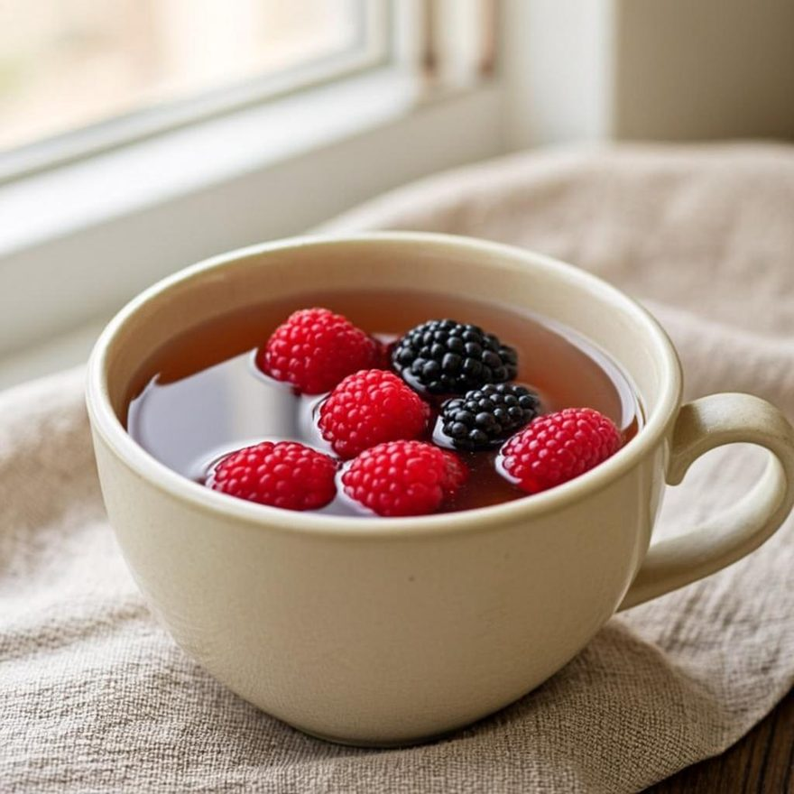
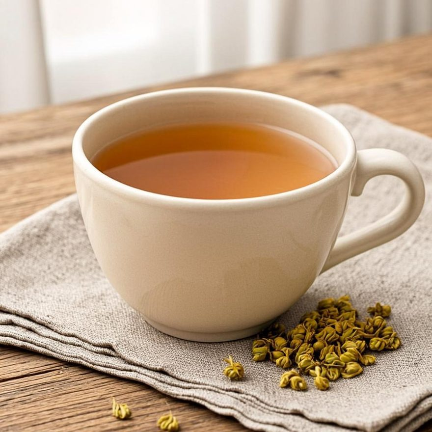
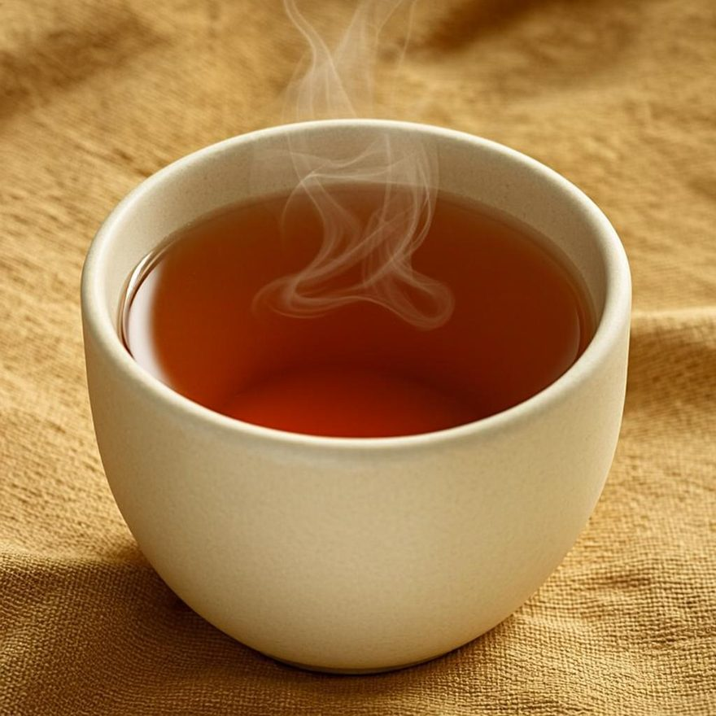
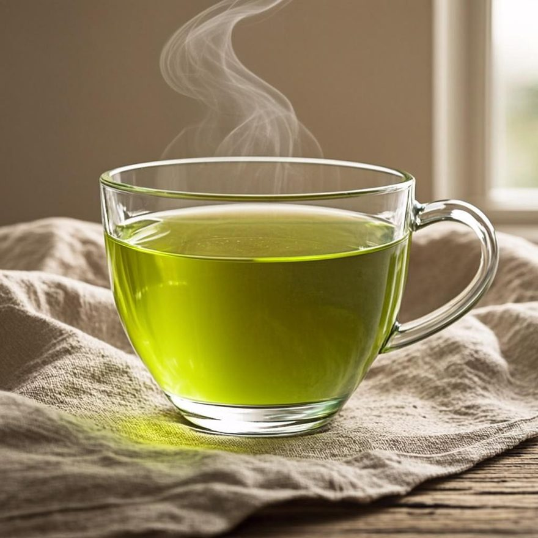
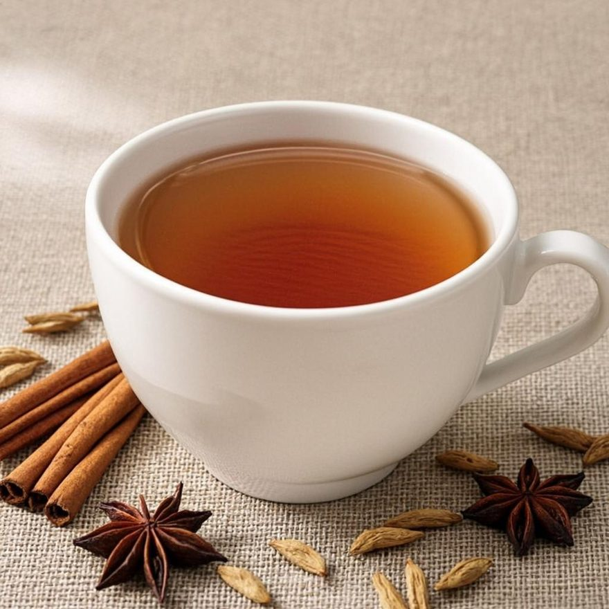
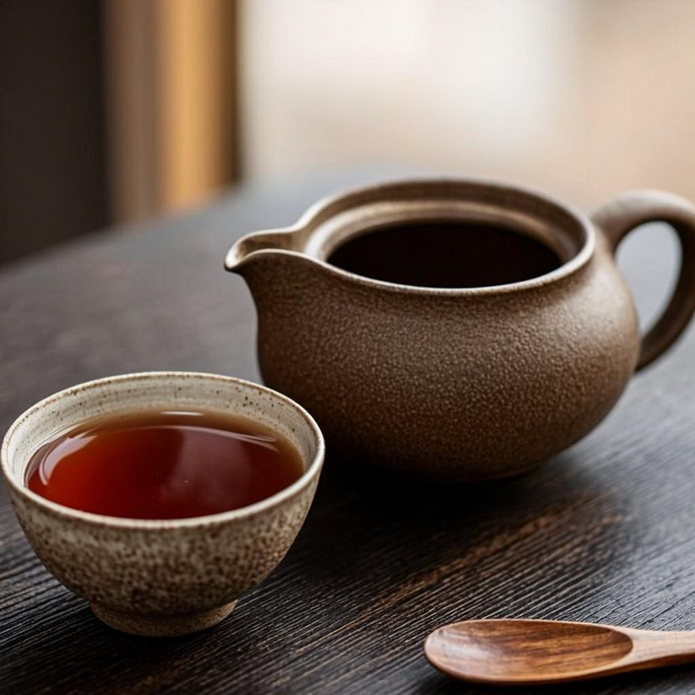
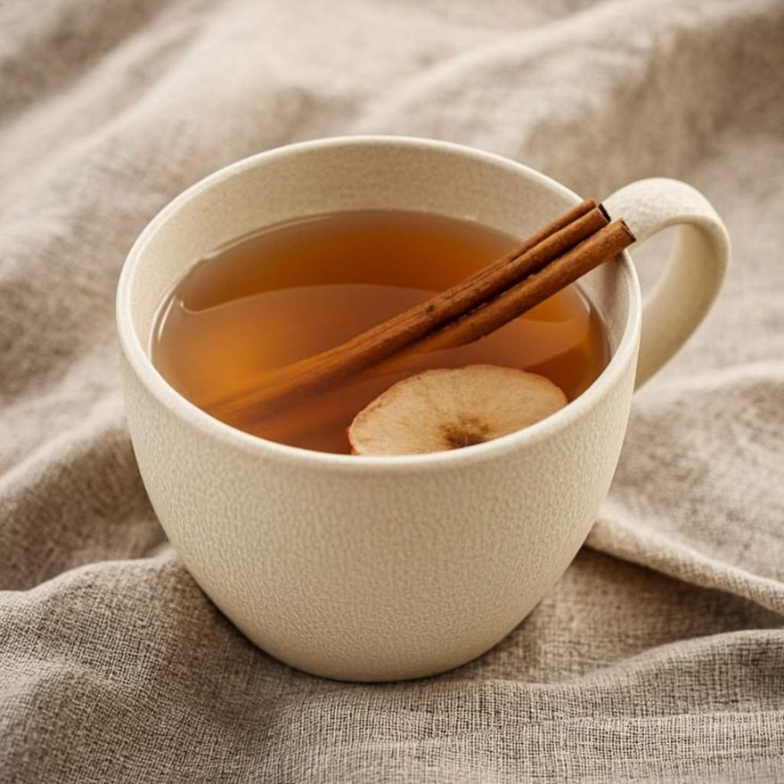
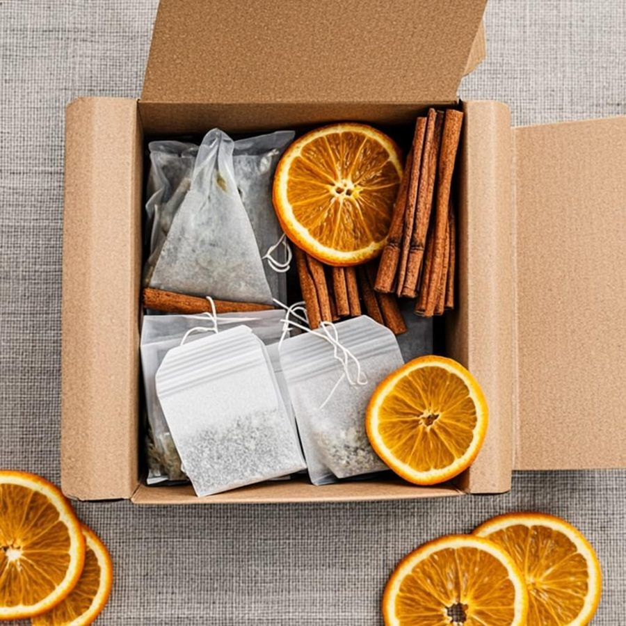

Sip & Talk · Moderne Teekultur
Tee, der verbindet.
GoSipTea macht Tee zeitlos und bringt Menschen durch gemeinsamen Genuss und echte Gespräche zusammen. Hochwertige Blatttees aus biologischem Anbau – fair, transparent und ehrlich.
Unsere Tee-Welten
Finde deine Kategorie
Von fruchtigen Früchtetees bis würzigem Chai – acht klar geordnete Teewelten in gleicher Größe machen die Auswahl einfach.

Früchtetee
Sonnenreife Früchte – fruchtig, sanft, ohne Koffein
Kategorie entdecken
Kräutertee
Blüten, Kräuter & eine Tasse Ruhe
Kategorie entdecken
Schwarztee
Klassiker mit Charakter & mildem Finale
Kategorie entdecken
Grüntee
Frisch, klar & vegetal
Kategorie entdecken
Gewürztee & Chai
Warme Würze, goldene Momente
Kategorie entdecken
Tee-Spezialitäten
Oolong & Matcha für Entdecker
Kategorie entdecken
Specials
Saisonale Editionen – jetzt: Winter
Kategorie entdecken
Probierpakete & Geschenksets
Zum Kennenlernen & Verschenken
Kategorie entdeckenUnsere Auswahl
Bestseller
Unsere meistgeklickten Klassiker – oft bestellt, oft empfohlen, immer wieder neu entdeckt.
* „Bio-Anbau“ und „Fairer Handel“ sind fiktive Beispieldaten dieses studentischen Projekts – keine realen Zertifizierungen.
Tea-Finder
Finde deinen Tee in 3 Schritten
Drei kurze Fragen zu Geschmack, Moment und Intensität – und wir empfehlen dir die passenden Tees. So vermeidest du Fehlkäufe und entdeckst neue Lieblinge.
So funktioniert's
- 1Erzähl uns deinen Geschmack.
Fruchtig, mild, würzig oder kräuterig? - 2Nenn uns deinen Moment.
Morgen, Nachmittag, Abend – oder rund um die Uhr? - 3Wähle deine Intensität.
Sanft, ausgewogen oder kräftig?
Unsere Philosophie
Mehr als ein Getränk. Ein gemeinsamer Moment.
„GoSipTea macht Tee zeitlos und bringt Menschen durch gemeinsamen Genuss und echte Gespräche zusammen. Dabei verbinden wir hochwertigen Tee mit Fairness, Transparenz und einem verantwortungsvollen Umgang mit Mensch und Umwelt.“
Wir wollen eine neue Generation für Tee begeistern – Menschen, die Tee nicht nur als Getränk sehen, sondern als Teil ihrer gemeinsamen Momente und ihres Lebensstils. Deshalb gestalten wir Tee unkompliziert, ehrlich und einladend: ohne Schnörkel, mit klarer Sprache und Sorten, die schmecken.
Über uns entdeckenUnsere Werte
Wofür GoSipTea steht
Vier Werte prägen jede Entscheidung – vom Anbau bis zur Tasse.
Nachhaltigkeit
Wir übernehmen Verantwortung für unsere Umwelt und wollen unseren Tee so nachhaltig und CO₂-neutral wie möglich gestalten – Schritt für Schritt, ehrlich und messbar.
Verantwortung
Bio-Anbau, natürliche Zutaten und faire Bedingungen entlang der gesamten Wertschöpfungskette – für einen bewussten Umgang mit Mensch und Umwelt.
Transparenz
Wir legen offen, wo unser Tee angebaut wird, woher die Zutaten stammen und wie das Produkt hergestellt wird. Vertrauen entsteht durch Nachvollziehbarkeit.
Gemeinschaft
GoSipTea bringt Menschen durch gemeinsamen Teegenuss zusammen – und schafft Raum für Gespräche, Austausch und gemeinsame Erlebnisse.
Aktionen
Deals für Studierende & die Weihnachtszeit
Zwei gute Gründe, jetzt zuzugreifen – dargestellt im Demo-Shop mit Beispielpreisen.
Weihnachtsdeal
Tee-Adventskalender mit Tee-Set
69 €49,90 €
24 Probierpakete aus dem ganzen Sortiment plus exklusives Steinzeug-Tee-Set (Kanne, 2 Tassen, Teesieb).
Winter Edition entdeckenStudentenrabatt
20 % für alle mit Studierenden-Ausweis
Unsere Tees starten bei 4,50 € – für Studierende gibt's zusätzlich 20 % Rabatt (Demo-Darstellung, gilt im echten Betrieb mit gültigem Ausweis).
Günstige Tees entdeckenCommunity
Sip & Talk auf Instagram
Teemomente, Teewissen und echte Gespräche – folge uns und werde Teil der Community.
Newsletter
Bleib im Gespräch.
Neue Sorten, Teewissen und Einladungen zu gemeinsamen Teemomenten – einmal im Monat, ohne Werbelärm. Abmeldung jederzeit möglich (Demo).
✓ Danke für dein Interesse! (Demo – es wurden keine Daten übermittelt.)